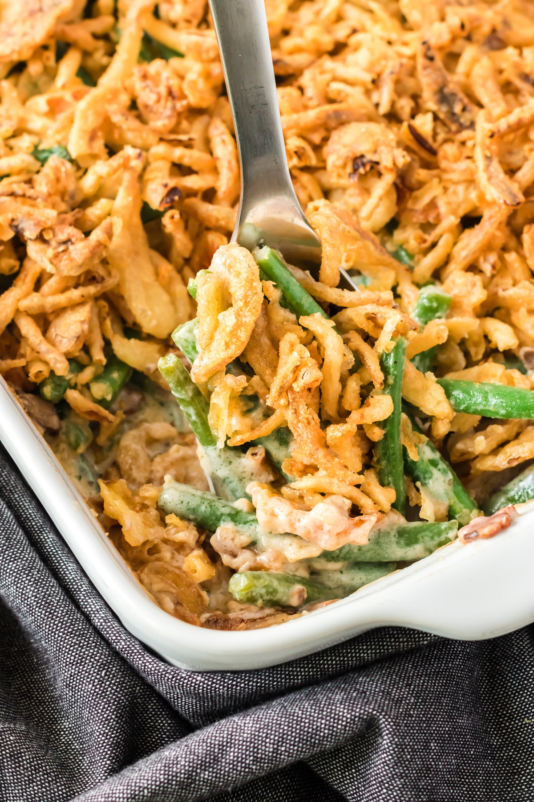

Green Bean Casserole

Ingredients
- 1 can (10 1/2 ounces) Condensed Cream of Mushroom Soup or 98% Fat Free Cream of Mushroom Soup
- 1/2 cup milk
- 1 tsp. soy sauce
- 1 dash black pepper
- 4 cups cooked cut green beans
- 1 1/3 cups French's French Fried Onions
Directions
- Stir the soup, milk, soy sauce, black pepper, beans, and 2/3 cup onions in a 1 1/2 quart casserole
- Bake at 350oF for 25 minutes or until the bean mixture is hot and bubbling. Stir the bean mixture. Sprinkle with the remaining onions.
- Bake for 5 minutes or until the onions are golden brown.
See the Campbell's website for more information and reviews of this recipe
Contact Me
paige.childers@umontana.edu
The University of Montana
32 Campus Drive
Missoula, MT 59812